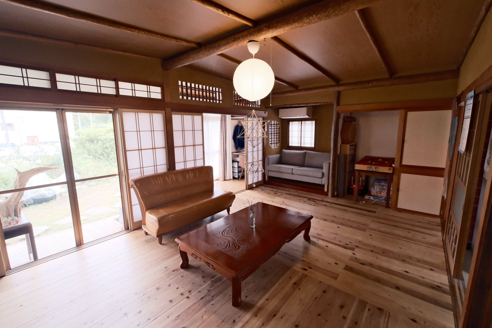
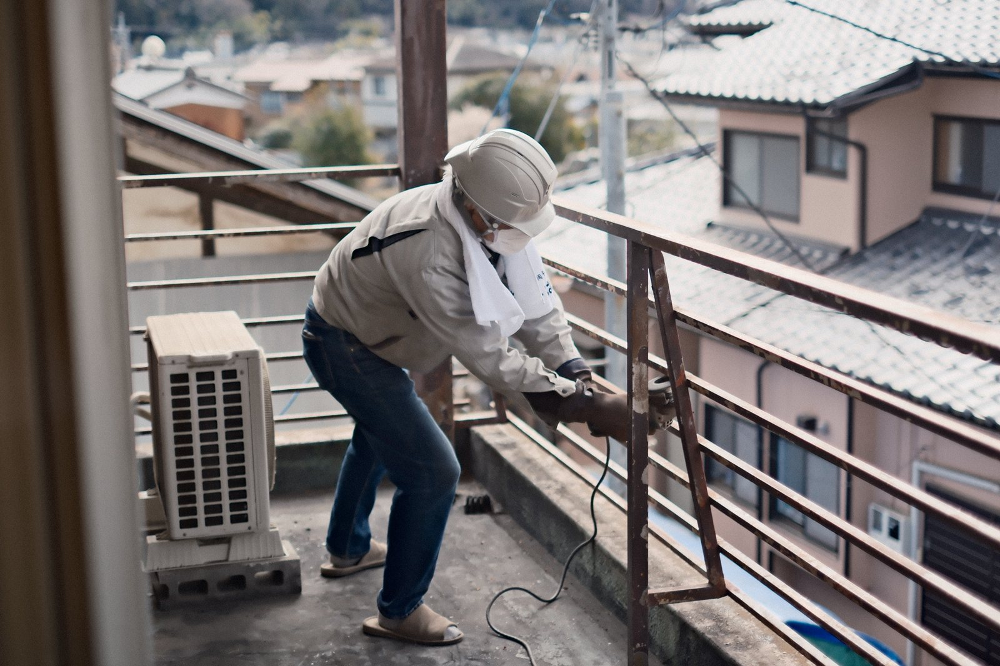
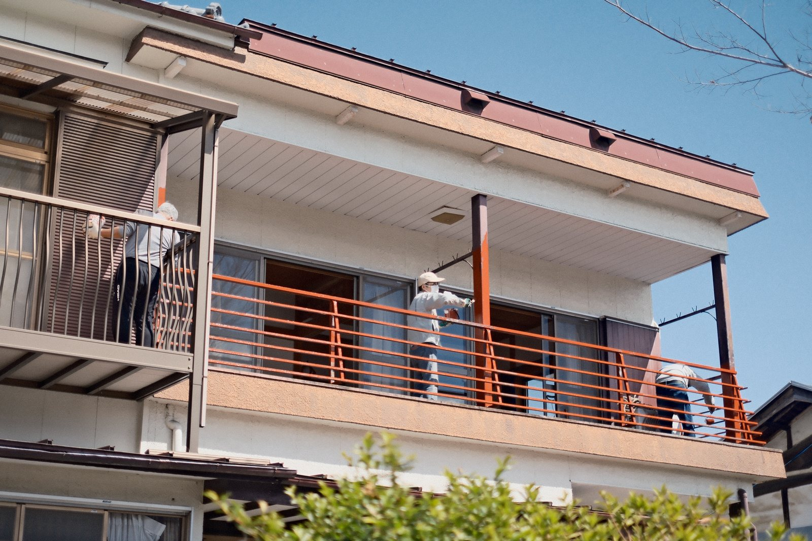
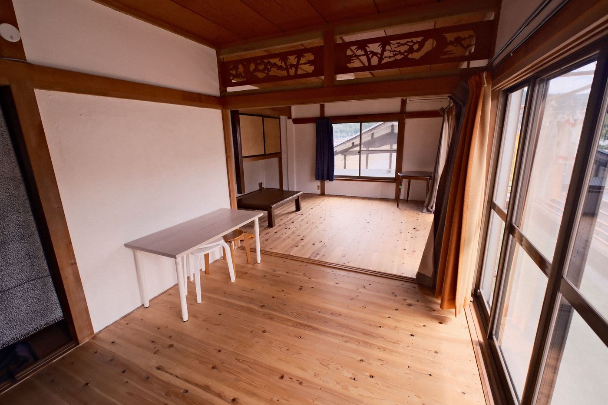

Start a business from a single vacant house — a two-day, one-night program in rural Gunma
Sat, Nov 28 – Sun, Nov 29, 2026Capacity 6 peopleFee ¥15,000
Language: The program is run mainly in Japanese. The organizer, Yukihiro Furuya, will support you in English throughout the two days, so you can take part even if your Japanese is limited.
Two days in Onishi, thinking about what you could start in an empty house.
Maybe you'd like to move to the countryside, but you're not sure you could make a living there. Maybe you want to keep your current job and have a second base outside the city, or start something on the side.
These are hard questions to answer from a distance. This program gives you two days in front of real houses, in a real town, to start thinking them through.
Onishi is a small mountain town in Fujioka City, Gunma Prefecture, about two hours from Tokyo by car.
The town runs a public–private vacant house bank called "Onishinchi," with around 30 houses registered. For this program we use two of them, chosen with business use in mind: Akaoni House, which is our base, and a second building that we visit together.
You'll think about whether a business of your own could work in one of these houses. At the end, you'll present your plan to people from the community and get their honest feedback.
Detailed information on the two houses (photos, building overview, current condition) is sent to people who request the details.

Akaoni House, our base. The ground-floor living room
The organizer, Akaonisha Workers' Cooperative, bought a vacant house in this town and turned it into the shared house "Akaoni House." We also help run local festivals. Akaoni House is both the program's base and its DIY site.


Sanding and repainting the rusty railingsDIY at Akaoni House (about 3 min)
Get the details
We'll email you photos of the two vacant houses and a summary of their condition, along with an invitation to the online Q&A session. Take a look before deciding whether to apply. (The materials are in Japanese; we're happy to explain them in English.)
Schedule
Day 1 Learn, see, touch
Saturday, November 28
10:00Meet at JR Jimbohara Station. We'll pick you up by car
10:40Arrive at Akaoni House. Introductions and an overview of the two days
11:15Visit a guesthouse that was converted from a vacant house
13:55Repair a room in Akaoni House with your own hands
15:20Walk through town and hear from people who started businesses in vacant houses. Continue the conversation back at Akaoni House
17:15Check in to your lodging and spend some time developing your idea on your own
18:30Dinner gathering with local residents (Akaoni House)
From past DIY days at Akaoni House: repainting the walls together
Day 2 Shape your plan
Sunday, November 29 (ends at 15:00)
9:00Turn your idea into a plan with a target customer and rough numbers. We'll go through each plan with you one by one
12:00Lunch
13:00Present your plan to people from the community and get honest reactions
14:30Look back on the two days
15:00Wrap up. We'll drive you back to Jimbohara Station

The 12-tatami room upstairs at Akaoni House
Times are approximate and may change depending on the day and the weather.
Who it's for
You have something you want to do and are looking for a place where it could work
You work for a company and are thinking about going independent or starting a side business
You'd like to eventually move to the countryside and build a livelihood there
You're interested in local issues and drawn to reusing vacant houses and DIY
We mainly have people in their 30s and 40s living in the Tokyo area in mind, but anyone living in Japan is welcome, including people from Gunma and nearby prefectures.
Overview
Dates
Saturday, November 28 – Sunday, November 29, 2026 (one night) Meet at JR Jimbohara Station at 10:00 on Saturday; finish at 15:00 on Sunday (we drive you to and from the station) It's on a weekend, so you don't need to take time off. The 8:29 rapid train on the Takasaki Line from Tokyo Station arrives at Jimbohara at 10:00
Location
Onishi, Fujioka City, Gunma Prefecture (about 2 hours from Tokyo by car) Pick-up from JR Jimbohara Station (Takasaki Line)
Capacity
6 people
Fee
¥15,000 Running the program costs about ¥50,000 per person. Because it is supported by a Gunma Prefecture subsidy, the fee is kept at ¥15,000 Lodging, meals and transportation are not included Company training budgets are welcome. We can issue a receipt from Akaonisha
Included
・The two-day program, with support from the organizer ・A short video introducing Onishi's history and what's happening there now (in Japanese) ・Conversations with people who started businesses in vacant houses ・Tours of the two vacant houses, with detailed materials ・DIY at Akaoni House (tools and materials) ・A chance to present to local people and get feedback ・Pick-up from and drop-off to Jimbohara Station, and car transport during the program
Lodging
Akaoni House or other lodgings in town, which we'll arrange for you ¥5,000 per night at any of them
Estimated cost
¥20,000 for the fee and lodging Meals are about ¥1,000 each (4 meals, about ¥4,000) Plus your train fare to Jimbohara Station
Language
Mainly Japanese. The organizer will support you in English throughout
How to apply
Please use the form below. We select participants based on your application, then send payment details (credit card, within 5 days of our email) and information for the day The deadline is Friday, November 20
Organizer
Akaonisha Workers' Cooperative In cooperation with: Fujioka City Onishi Branch Office / Onishi Kominka Konaika
Notes
Supported by Gunma Prefecture's FY2026 subsidy program for revitalizing depopulated communities
A second session is planned for a weekend in January 2027 (one night). If these dates don't work for you, please get in touch.
FAQ
Can I join if I don't speak much Japanese?
Yes. The program is run mainly in Japanese, but the organizer will help you in English during the activities, conversations and your presentation. Feel free to ask us about your situation before applying.
Can I join without a car?
Yes. We pick you up at JR Jimbohara Station (Takasaki Line) at 10:00 on Saturday and drive you back after we finish at 15:00 on Sunday.
Do I need a business idea?
No. You'll see the houses and the town, hear from local people, and we'll think it through together over the two days.
Can I come alone?
Yes. The program is designed for people joining on their own.
Is there a selection process?
Yes. With only 6 places, we'll read your application and decide who joins. If you can't join this time, we'll invite you to the second session in January 2027.
Can my company pay?
Yes. Company training or self-development budgets are welcome. Let us know who the receipt should be addressed to.
What if I need to cancel?
Cancel by Monday, November 23 for a full refund of the fee. From November 24 to 26, 50% is refunded. Cancellations the day before or on the day, and no-shows, are not refunded. If we cancel, you get a full refund. Lodging follows each lodging's own policy.
Online Q&A session
We'll introduce the program and answer your questions. You're welcome even if you're still undecided or just want to listen. Your camera can stay off. The session is in Japanese, but you can ask questions in English.
At his previous company, Bornrex, he planned and ran support for new-business creation programs commissioned by Tokyo Metropolitan Government and Oita Prefecture (around ¥100 million in scale) for five years
As a mentor, he has supported about 100 startups and entrepreneurs over five years
Video creator for more than 15 years, with over 700 productions
Moved to Onishi in 2023. Bought a vacant house and launched the shared house "Akaoni House," and helps plan and run local festivals and events. Advisor to the Onishi Community Revitalization Council
Apply
Please apply using the form below. We'll review your application and email you the result, along with detailed information on the two vacant houses.
If the form doesn't work, please email furuya@akaonisya.jp. If you'd like to talk before applying, feel free to email or call (+81 80-3932-2241). English is fine.
The deadline is Friday, November 20. Applications are reviewed in the order received, and we aim to reply within 3 days. Applications close once all places are filled.
About Akaonisha
Akaonisha Workers' Cooperative is a group rooted in Onishi. We renovate vacant houses, run the shared house "Akaoni House," organize the Akaoni Startup Residency, produce videos, and help run local festivals and events. Our representative director, Yukihiro Furuya, also moved to Onishi from elsewhere.